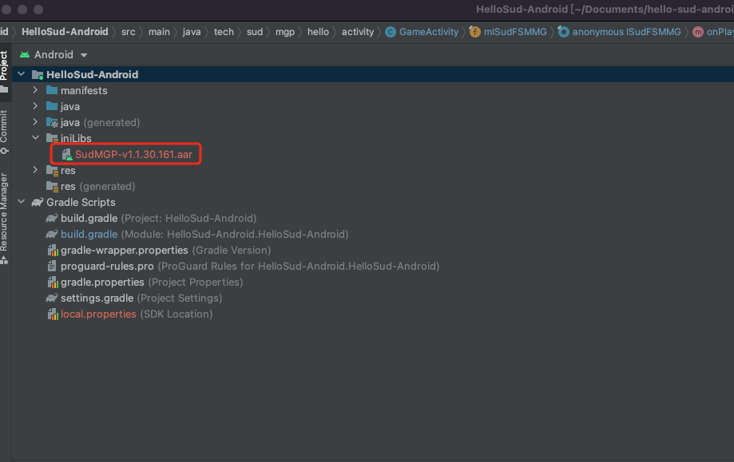

#

Quick start for Android
1. Contact Sud.Tech to obtain appId, appKey, appSecret for your service.
2. Download Android SDK SudMGP.aar and the new Demo QuickStart, the demo project HelloSud-Android.zip.
3. Import the SDK into the project.
In the following example, Android Studio 4.2, Gradle 6.7.1, and the SudMgpExample-Android project are used, and the programming language is Java:
- Copy **SudMGP.aar** to the **SudMgpExample-Android/app/libs** directory, as shown in the following figure:

- Add the configurations required by the SDK to the **SudMgpExample-Android/app/build.gradle** file.
```groovy
repositories {
// Load the directory of the game SDK libs.
flatDir {
dirs '../app/libs'
}
}
dependencies {
// Load the game SDK AAR package.
implementation fileTree(include: ['*.jar', "*.aar"], dir: 'libs')
// Load OkHttp.
implementation 'com.squareup.okhttp3:okhttp:4.9.2'
......
}
```
4. Initialize the SudMGP. For details, see QuickStart.
5. Integrate lifecycle callbacks of the SudMGP and add the game view to the native layout. For details, see QuickStart.
6. Load the game using the SudMGP. For details, see QuickStart.
7. Optional: Implement ISudFSMMG. For details, see QuickStart.
8. Optional: Implement ISudFSTAPP. For details, see QuickStart.
9. Destroy Game with the SudMGP. For details, see QuickStart.
10. Call sequence diagram of APP Cient and SudMGP